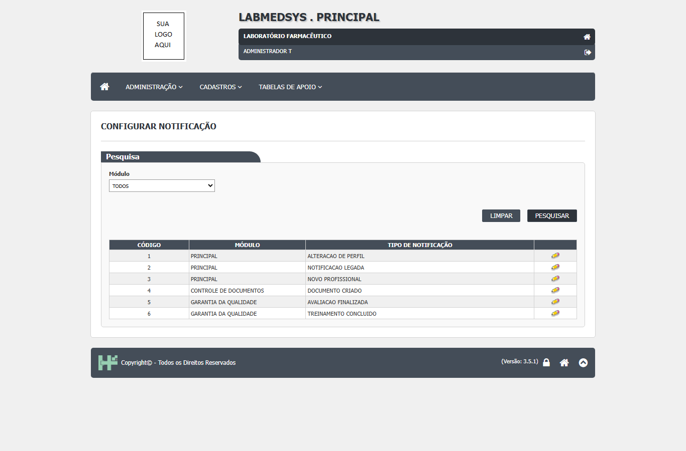

Para que serve
O Tipo de notificação é a lista dos tipos de aviso que o sistema sabe enviar, de todos os módulos. Para cada tipo (por exemplo, "Novo profissional") mostra o módulo e permite abrir a configuração dele (título, prazos, quem recebe, e-mail). Quem usa é o administrador que configura os avisos do sistema (leitura da área, a validar). A tela não cria, não altera e não exclui tipos: eles vêm do banco de dados. Sem um tipo configurado, nenhum módulo consegue criar aviso desse tipo.
No ambiente de teste não existe um menu separado com este nome: o menu Configurar notificação abre esta lista, e o título no alto da tela é "CONFIGURAR NOTIFICAÇÃO", o mesmo da tela de configuração do tipo. Ponto para validar com a área e o DBA qual é o nome certo do menu.
Quem usa e em que etapa do processo
Quem usa
- O administrador que configura os avisos do sistema.
- Quem pode abrir, incluir, alterar, excluir, imprimir e ver o histórico está em "Quem pode usar (permissões)", mais abaixo.
Em que etapa do processo entra (tela 11 do menu Administração, módulo Principal)
- Pelo menu de Administração. Ao abrir, a grade não vem preenchida: é preciso clicar em Pesquisar.
- Para o tipo existir, alguém o cadastrou direto no banco (não há tela para isso; ponto para validar com o DBA).
O que acontece depois (para onde o trabalho segue)
- A tela não grava nada. O ícone Editar leva à tela Configurar notificação, que é a tela 09 deste menu.
Fonte: Resumo da tela e fluxo da tela (leitura do código e dos testes). O que for leitura da área precisa ser validado com a área.
Antes de começar (o que precisa existir)
| Precisa existir | Para quê | Onde se cadastra |
|---|---|---|
| Os tipos de aviso cadastrados no banco | A tela só lista; não há como criar um tipo | Banco de dados (com o DBA); não há tela para isso |
| Permissão para a tela de notificações no seu perfil | Para abrir a lista e o ícone de configuração | Menu Administração › Perfil |
Passo a passo
Situação das imagens (14/11/2026): imagem reaproveitada do teste de 26/10/2026 (rodada 3), conferida contra o texto. Sem imagem: a tela ao abrir antes de pesquisar, a pesquisa sem resultado, o ícone de "mais" (Configurar) de um tipo ainda sem configuração e o uso do filtro Módulo.
- No menu Administração, abra Configurar notificação. A tela mostra o quadro "Pesquisa" com o campo Módulo (TODOS, PRINCIPAL, CONTROLE DE DOCUMENTOS, GARANTIA DA QUALIDADE) e os botões LIMPAR e PESQUISAR. A grade não vem preenchida.
- Clique em PESQUISAR. A lista mostra os tipos de aviso com Código, Módulo, Tipo de notificação e o ícone de editar. Sem resultado: "A pesquisa não retornou nenhum resultado.".

Figura 1: lista de tipos de aviso depois de pesquisar: seis tipos (Principal: Alteração de perfil, Notificação legada e Novo profissional; Controle de Documentos: Documento criado; Garantia da Qualidade: Avaliação finalizada e Treinamento concluído), cada um com o lápis; só os botões LIMPAR e PESQUISAR.
- Clique no ícone da linha para abrir a configuração do tipo (tela Configurar notificação). Para um tipo ainda sem configuração o código mostra um "mais" (dica "Configurar"); para um tipo já configurado, o lápis (dica "Alterar Configuração"). No teste todos os seis tipos mostraram o lápis.
O que o relatório mostra e o que ele grava
A tela é só de consulta: nada é gravado aqui. Ela lista os tipos de aviso com o módulo de cada um e leva à configuração. Não tem botão Incluir, Excluir, Imprimir, Excel nem Log (CT-PRI-ADM-46/47 e 097: não existe Incluir, nem Imprimir, nem Exportar). O que se grava, ao salvar, é na tela Configurar notificação.
O que o sistema recusa
Nada: a tela não tem campo de gravação. A única mensagem própria é "A pesquisa não retornou nenhum resultado." (gst_tipo_notificacao_lst.aspx:64).
Quem pode usar (permissões)
- A lista declara o código de função
ADMINISTRACAO/TIPO_NOTIFICACAO(gst_tipo_notificacao_lst.aspx.cs:18), que não aparece na árvore de permissões do Principal (a árvore traz "Configurar notificação" e "Notificações do sistema"). Falta saber, com o DBA, qual perfil de função dá acesso (ponto para validar). - A lista bloqueia quem não tem a função: o usuário
t.semadminfoi levado ao acesso negado ao digitar o endereço (CT-PRI-069). O ícone de editar depende da permissão de alterar. - O formulário aberto pelo ícone é outra tela (Configurar notificação), com controle próprio descrito no manual dela.
Cuidados e falhas conhecidas
Nenhum defeito do registro (DV-PRI) está ligado a esta tela. Pontos de atenção:
- O filtro Módulo pode não filtrar: pelo código, a pesquisa sempre traz todos os tipos (gst_tipo_notificacao_lst.aspx.cs:35). Não foi testado; confira na tela.
- A coluna Módulo pode ficar em branco para tipos de módulos fora de Principal, Controle de Documentos e Garantia da Qualidade (por exemplo, Estoque) (svcNotificacao.cs:18-28).
- Tipo "configurado" pode não enviar aviso: o código conta eventos inativos ou excluídos como configurados, então o lápis não garante que o aviso é enviado (a confirmar).
- Tipos criados ou apagados pelo banco não deixam rastro: a tabela não tem usuário nem data (pelo código).
- Se um tipo que você espera não aparece, peça ao responsável pelo sistema (o DBA): não há tela para cadastrá-lo.
Ícones e botões da lista
| Ícone ou botão | O que faz | Quando aparece |
|---|---|---|
| Módulo (lista) | Escolhe o módulo (pelo código, pode não filtrar) | Sempre |
| PESQUISAR | Lista os tipos de aviso | Sempre |
| LIMPAR | Esvazia filtro e lista | Sempre |
| Lápis (Alterar Configuração) | Abre a tela Configurar notificação do tipo | Em cada linha de tipo já configurado, para quem pode alterar |
| Sinal de mais (Configurar) | Abre a tela Configurar notificação de um tipo ainda sem configuração | Em tipo sem configuração (pelo código; não visto em teste) |
Campos da tela
Caminhos das fontes na seção Resumo da tela.
| Campo na tela | Tipo | Obrigatório | Regra, limite ou valores possíveis | Fonte |
|---|---|---|---|---|
| Pesquisa: Módulo | Lista | Não | TODOS, PRINCIPAL (0), CONTROLE DE DOCUMENTOS (8), GARANTIA DA QUALIDADE (13). Não é usado na pesquisa | gst_tipo_notificacao_lst.aspx:39-47; gst_tipo_notificacao_lst.aspx.cs:35 |
| Lista: CÓDIGO | Coluna | Não se aplica | Número do tipo | gst_tipo_notificacao_lst.aspx:76 |
| Lista: MÓDULO | Coluna | Não se aplica | Nome do módulo do tipo | gst_tipo_notificacao_lst.aspx:80; svcNotificacao.cs:18-28 |
| Lista: TIPO DE NOTIFICAÇÃO | Coluna | Não se aplica | Nome do tipo, até 100 caracteres | gst_tipo_notificacao_lst.aspx:84; GST_TIPO_EVENTO.sql:4 |
| Lista: Editar | Ícone | Não se aplica | "Configurar" ou "Alterar Configuração", conforme exista um evento ligado ao tipo | gst_tipo_notificacao_lst.aspx.cs:196-210 e 376-386 |
| Dados do tipo que a tela não mostra | Banco | Não se aplica | CODIGO_OBJETO, OBJETO_REFERENCIA, CAMPO_CHAVE (a que objeto do módulo o tipo se liga) e DESTINO_FLEXIVEL | GST_TIPO_EVENTO.sql:2-8 |
Botões e ações
| Botão ou ação | Quando aparece | O que faz | Para onde leva | Fonte |
|---|---|---|---|---|
| Pesquisar | Sempre | Lista todos os tipos de aviso | Não muda | gst_tipo_notificacao_lst.aspx.cs:63-70 |
| Limpar | Sempre | Volta o filtro a TODOS e esconde a grade | Não muda | gst_tipo_notificacao_lst.aspx.cs:72-75 e 289-295 |
| Editar (ícone) | Em toda linha, se o usuário tem a ação Alterar na função da tela | Abre a configuração do tipo | Tela Configurar notificação | gst_tipo_notificacao_lst.aspx.cs:167-169; ClassePaiLst.cs:230-240 |
Mensagens do sistema
| Mensagem (texto exato do código) | Quando aparece | Fonte |
|---|---|---|
| A pesquisa não retornou nenhum resultado. | Lista vazia | gst_tipo_notificacao_lst.aspx:64 |
| Não existe log de alteração para este registro. | Janela de log (não é acionada por nenhum botão visível) | gst_tipo_notificacao_lst.aspx:142 |
| Confirma a exclusão do item? | Código de exclusão que não está ligado a nenhum botão | gst_tipo_notificacao_lst.aspx.cs:364 |
Quem pode fazer o quê
Ainda não levantado para esta tela
O quadro "Quem pode fazer o quê" é preenchido a partir de testes de tela por perfil (nível, área e etapa do registro), nunca por suposição. Esta tela ainda não passou por esse levantamento.